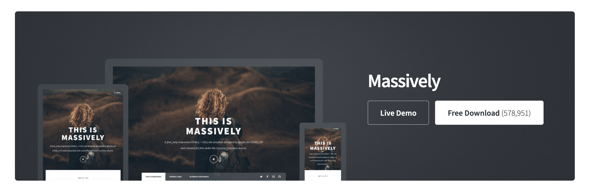

Verkefni 1
Vefsíðugerð og útgáfustýring
Hér lýsi ég skipulagi og vinnuferli við gerð minnar fyrstu vefsíðu, allt frá hugmyndavinnu til útgáfu á GitHub. Ég nota ýmis verkfæri, s.s. Brackets, Git og ChatGPT, auk þess sem ég reiði mig á leiðbeiningar kennarans og myndbönd sem fylgdu námskeiðinu. Í lokin skrái ég helstu markmið og næstu skref í áfanganum.
Undirbúningur og upphaf hönnunar
Fyrst skoðaði ég leiðbeiningar frá kennara og las vel yfir lýsinguna á verkefninu til að fá grunnskilning á því hvernig vefsíðan ætti að vera uppsett. Ég bjó síðan til yfirlit með ChatGPT um hvernig best væri að byrja: hvers konar sniðmát (e. template) gæti hentað, hvernig ég gæti breytt því og hvers konar verkfæri væri gott að hafa við höndina.
Næsta skref var að skoða sniðmát á HTML5 UP, þar sem er að finna fjöldann allan af ókeypis sniðmátum. Ég halaði niður (e. download) nokkrum til skoðunar og endaði á sniðmátinu Massively (sjá mynd fyrir neðan), sem minnir á bloggsíðu og hentar vel til að birta verkefnaskil eða dagbókarfærslur. Mér þótti það eiga best við því það er bæði einfalt og stílhreint.
Að auki horfði ég á stuðningsmyndbönd frá kennara þar sem farið var yfir helstu aðgerðir við uppsetningu og hönnun. Til að vinna í HTML-skránum náði ég mér í Brackets. Það er létt og aðgengilegt forrit til að skrifa HTML/CSS/JS kóða.
Uppsetning á grunnsíðunni (index)
Ég byrjaði á að vinna í index.html sem fylgdi sniðmátinu Massively. Ég áttaði mig á uppbyggingu HTML-skránna, hvernig þær tengjast hvor annarri og hvernig setja mætti inn nýja hluta (e. div) eftir þörfum.
Á vefsíðunni vildi ég hafa auðvelt flakk (e. navigation), svo ég bætti við flipum fyrir áfangana sem ég er að vinna í: VÉL608G (tölvustudd framleiðsla), VÉL205M (tölvustýrður vélbúnaður) og að lokum “Um mig” flipa til að segja stuttlega frá mér og setja inn ferilskrá. Einnig ákvað ég að hafa hlekki í Facebook og GitHub síður mínar.
Ég sá fljótt að sumar myndir, sem ég ætlaði að setja inn, voru of stórar og hefðu hægt síðuna. Ég notaði því reduceimages.com til að minnka skráarstærðir og skala myndirnar þannig að þær pössuðu betur á síðuna.
Sérsniðnar undirsíður og ferilskrá
Til að skipuleggja efnið betur bjó ég til HTML-skrár fyrir hvern áfanga. Þar setti ég upp stuttan texta, forsíðumynd og tengla í verkefni (t.d. “Verkefni 1 – VÉL608G”). Þetta gerði ég með því að afrita index.html sem grunn, breyta titlinum og efni, og nefna skrárnar t.d. vel608G.html og vel205M.html.
Í flipanum “Um mig” ákvað ég að birta tvær myndir af mér og stuttan kynningartexta. Einnig lét ég ferilskrána mína (PDF) vera aðgengilega með tengli (e. hyperlink) beint úr textanum. Þar þurfti ég að nota < a href="resume%202025.pdf" target="_blank" rel="noopener noreferrer">. ChatGPT leiðbeindi mér um rétta uppsetningu. Að auki prófaði ég að setja tvær myndir hlið við hlið en rakst á erfiðleika við að miðja þær nákvæmlega. Ég skoðaði aðal CSS-skrána (main.css) og reyndi ýmsar útfærslur en ákvað svo að hafa bara eina mynd.
Stofna GitHub-aðgang og repository
Ég bjó til GitHub-aðgang með notendanafni freddyvegas og stofnaði nýtt repository sem heitir Vefs-a (sjá repository). Þar get ég geymt öll HTML-skráarsöfn, myndir og CSS. Ég fylgdi myndbandi frá kennara (YouTube-færslu) sem útskýrði hvernig á að búa til repository í GitHub.
Í upphafi ætlaði ég að sækja Git Bash í gegnum MacPorts en komst að því að ég var þegar með Git uppsett á macOS. Ég fór inn í skipanalínu (Terminal) og notaði git add init add commit og push til að hlaða gögnunum inn á Github (sjá hér). Þegar ég ætlaði að nota push aðgerðina lenti ég í vandræðum með “authentication”. Eftir smá leit á geeksforgeeks.com fann ég út að GitHub krefst nú Personal Access Token í stað lykilorðs. Þetta var það sem ég gerði:
- Stofnaði token í
Settings > Developer Settings. - Afritaði það og notaði sem “lykilorð” þegar ég gerði
git push -u origin mainaðgerðina. - Eftir það gekk upphleðslan vel.
Eftir að gögnin voru komin á GitHub fylgdi ég leiðbeiningum næsta kennslumyndbands kennara um hvernig ætti að birta vefsíðuna með GitHub Pages. Í Settings > Pages valdi ég branch: main / root folder. GitHub bjó til hlekk til að skoða síðuna “live.” Eftir smá stund var allt virkt.
Markmið og næstu skref í áfanganum
Markmiðin mín í þessum áfanga eru eftirfarandi:
- Að tileinka mér grunnatriði í stafrænum framleiðsluferlum, svo sem geislaskurði, 3D hönnun og útsteypimótum.
- Að verða öruggur í að nota vefsíðugerð sem hluta af útgáfustýringu, t.d. til að halda utan um portfolio, verkefnaskjöl og ferilskrá.
- Að tengja verklegar æfingar, s.s. 3D prentun og fræsingu, við hönnunarfasa og verkefnastjórnun, þannig að ég skilji samhengi milli hugmyndavinnu og framleiðslu.
Ég er ekki enn búinn að ákveða lokaverkefnið mitt í áfanganum en ég er mjög spenntur að byrja á því. Verkefnið þarf bæði að vera spennandi og raunhæft í framkvæmd.
- © Untitled
- Design: HTML5 UP